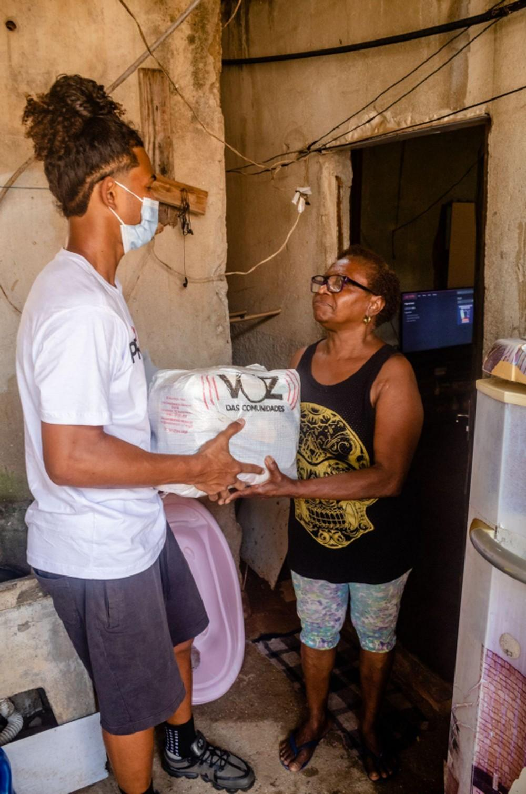
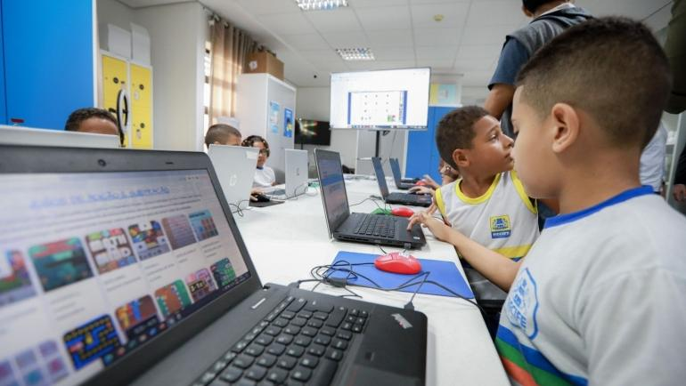
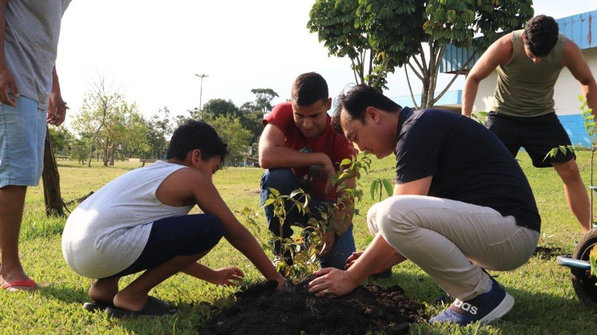

Conheça alguns dos projetos desenvolvidos pela ONG Mãos Solidárias para apoiar pessoas e fortalecer a
comunidade.
Cesta Solidária

Objetivo: combater a insegurança alimentar.
O projeto arrecada alimentos, produtos de higiene e itens essenciais para montar cestas básicas
destinadas a famílias em situação de vulnerabilidade.
Como funciona:
Arrecadação de alimentos.
Separação dos kits por voluntários.
Distribuição para famílias cadastradas.
Educação para o Futuro

Objetivo: ampliar o acesso à educação e à tecnologia.
O projeto oferece oficinas gratuitas de informática, reforço escolar, alfabetização digital e
orientação profissional para crianças, adolescentes e adultos.
Atividades oferecidas:
Informática básica.
Internet e segurança digital.
Oficinas de currículo e empregabilidade.
Apoio escolar.
Verde Esperança

Objetivo: incentivar a preservação ambiental.
Realizamos mutirões de limpeza, plantio de árvores e campanhas de conscientização sobre
reciclagem e sustentabilidade.